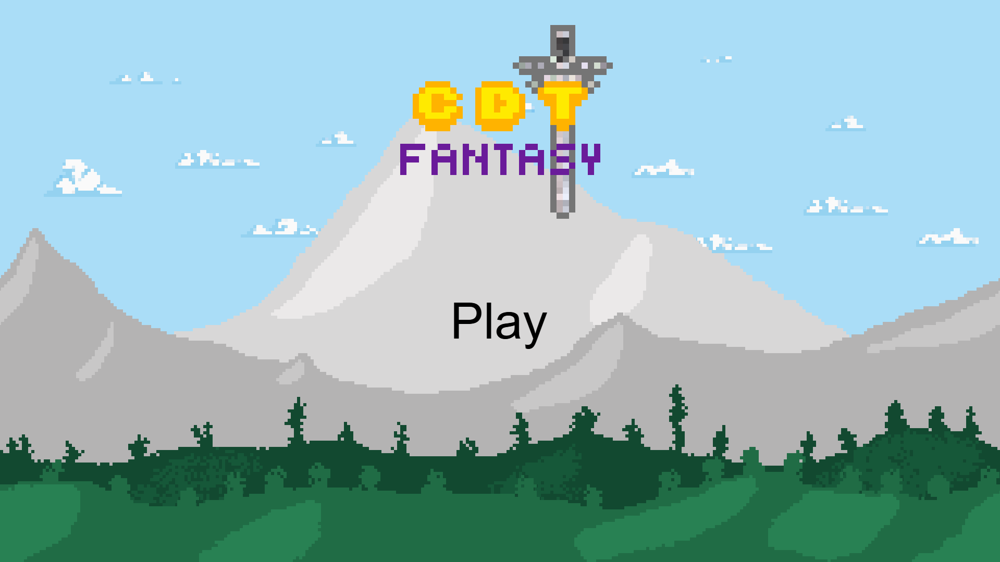
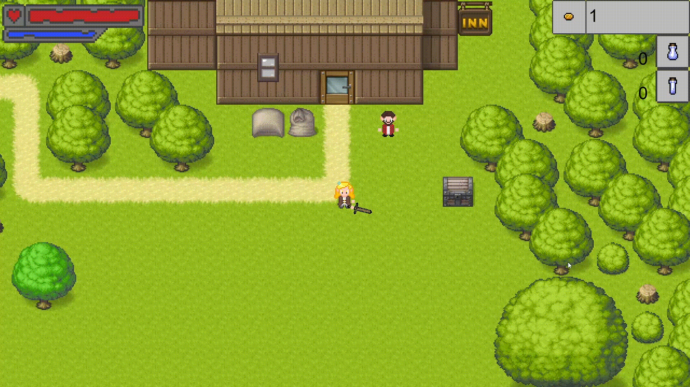
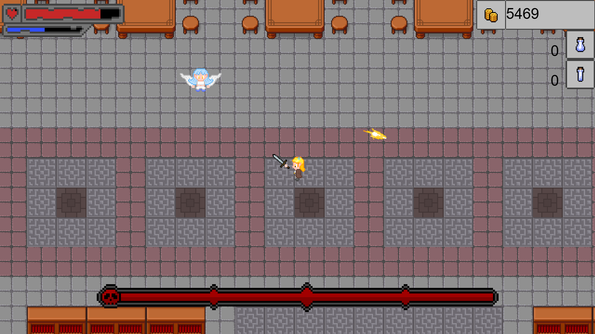

This game was developed with the Construct 2 engine during 12th grade as a project for Computer Applications B (Aplicações Informáticas B).
Grade: 20/20

The player is transported to a fantasy world and must defeat the Demon King before he becomes too powerful and invades their world.
The gameplay is primarily focused on exploration.
The player can unlock new weapons by purchasing them in shops, opening chests, or defeating enemies.
The weapon the player is currently holding follows the mouse pointer. With a melee weapon equipped, the player attacks by rapidly moving the mouse.

Other weapons can fire projectiles or create obstacles at the mouse pointer's position that target enemies.
While exploring, the player encounters enemies and bosses, most of which must be defeated to progress.

The game features a top-down perspective and an overworld heavily influenced by The Legend of Zelda: A Link to the Past.
The enemies and most bosses are direct recreations of their counterparts in Terraria.
The rotating weapon mechanic was inspired by the combat in Supreme Duelist Stickman.
The game was never published because it uses assets and audio from Terraria, along with other assets licensed for non-commercial use only.
This unreleased student project was created for educational purposes and is not intended for public or commercial distribution. The underlying systems, gameplay mechanics, and original assets were created by me and my group, alongside third-party assets used under non-commercial licenses. However, most enemies and boss sprites are property of Re-Logic. This project is not affiliated with or endorsed by Re-Logic, and no copyright infringement is intended.